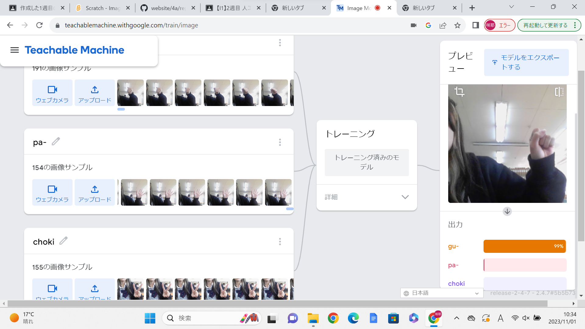

2-2 機械学習体験

1.内容
パソコンのカメラに向けて、グー・チョキ・パーをすると読み取って、何の手を出している
か判別するプログラムを作成した。一つの手につき、150枚以上の写真を撮って多くの資料を
作る。また、手だけ映した写真だったら、すべて手だけでないとプログラムの手の判断が鈍っ
ていた。
2.感想
手だけを認識してもらいたかった。しかし、体が資料集めのときに映ってしまうしまった
写真の占める面積が広いた体の動きに合わせて手の判別が変わってしまった。だから、次から
は資料などを写真で撮る際、必要な部分だけをできる限り映すようにしようと考えた。